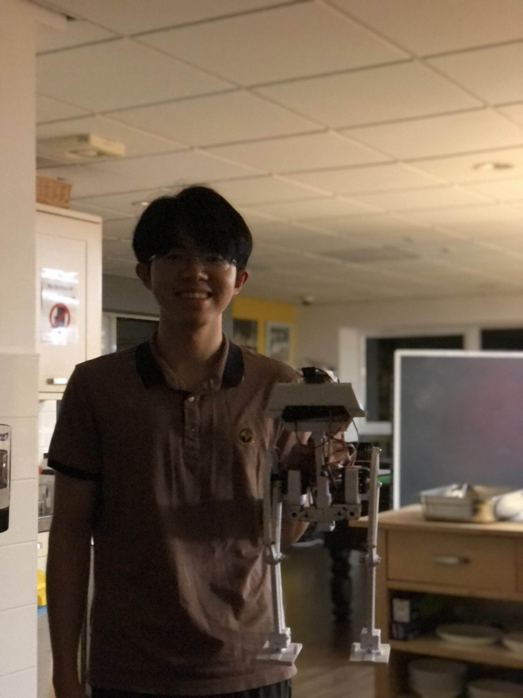

All projects
Bipedal Robot
A 3-DOF-per-leg biped running inverse kinematics and gait planning in real time on Arduino, with sensor-feedback balance correction and failure-driven design iterations.
Inverse Kinematics
Gait Planning
Arduino
Designed and fabricated a bipedal walking robot with three degrees of freedom per leg. The team tackled mechanical design, control and testing in parallel, using Fusion 360 for CAD and the Arduino IDE for programming. Inverse kinematics and gait planning algorithms were implemented to achieve stable locomotion, while weekly sprints focused on sensor selection, failure analysis and optimisation informed by testing.
Highlights
- 3 DOF per leg (hip pitch, knee, ankle) — sufficient for sagittal‑plane stable walking and easier to tune than a 6 DOF leg.
- Inverse kinematics + gait planner generate joint trajectories on Arduino in real time, with sensor feedback for balance correction.
- Iterative weekly sprints — CAD revisions in Fusion 360 driven by failure analysis from each round of testing.
Skills & Technologies
- Inverse Kinematics
- Gait Planning
- Fusion 360 CAD
- Arduino / Embedded C
- Sensor Selection & Failure Analysis
Gallery
